Makanan Utama
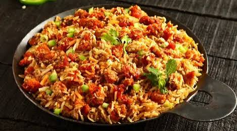
Nasi Goreng Rempah Senja [BEST SELLER]
Nasi goreng aromatik dengan bumbu rempah rahasia, suwiran ayam kampung, telur, dan acar segar.
Rp 35.000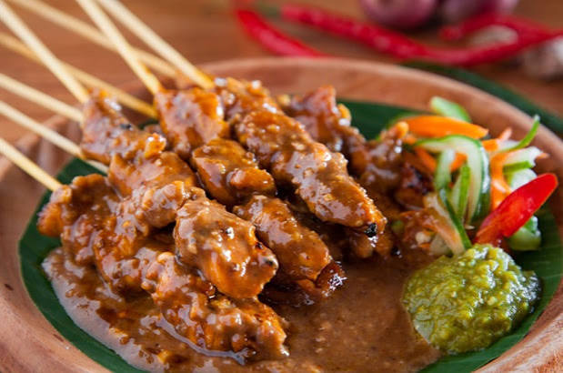
Sate Ayam Madura Istimewa
Sate dada ayam empuk disiram saus kacang gurih kental lengkap dengan lontong dan bawang goreng.
Rp 42.000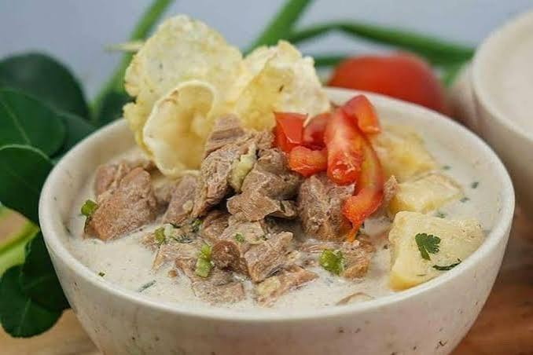
Soto Betawi Kuah Susu
Daging sapi empuk pilihan dalam kuah santan dan susu yang gurih hangat, disajikan dengan emping.
Rp 48.000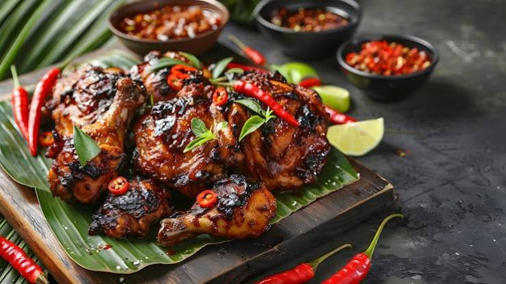
Ayam Bakar Taliwang
Ayam kampung bakar dengan bumbu cabai khas Lombok yang pedas membakar lidah namun kaya rempah.
Rp 45.000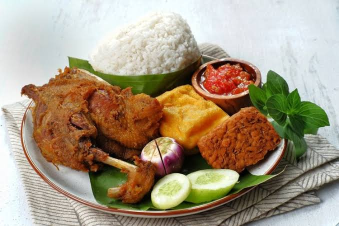
Bebek Goreng Kremes Madura
Bebek empuk berbalut bumbu hitam pekat khas Madura disajikan bersama kremesan gurih renyah.
Rp 52.000Mie Goreng Tek-Tek Jawa
Mie kuning kenyal dimasak menggunakan arang dengan kol, bakso, suwiran ayam, dan kecap manis.
Rp 30.000Minuman Segar
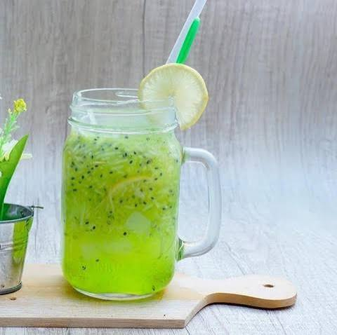
Es Timun Serut Jeruk Nipis
Minuman penyegar dahaga dari serutan timun segar, perasan jeruk nipis asli, dan sirup gula tebu.
Rp 18.000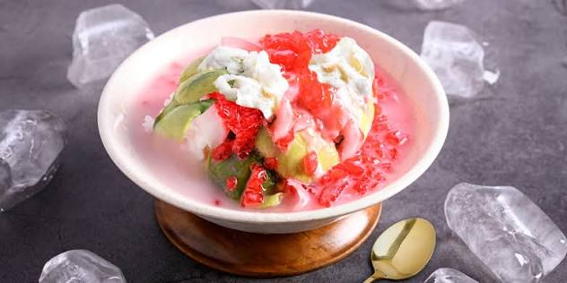
Es Campur Senja
Kombinasi buah segar, cincau hitam, kolang-kaling, alpukat, disiram sirup merah manis dan susu kental.
Rp 22.000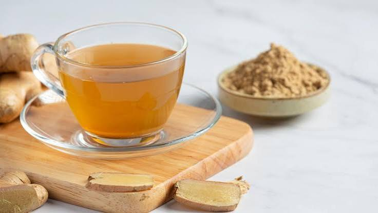
Wedang Jahe Merah Sereh
Minuman herbal hangat penambah kebugaran dari seduhan jahe merah murni, serai, dan gula aren.
Rp 15.000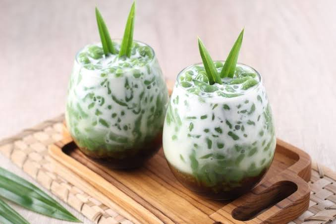
Es Dawet Pandan Gula Aren
Dawet hijau beraroma pandan asli dengan santan segar perasan pertama dan manisnya gula aren murni.
Rp 20.000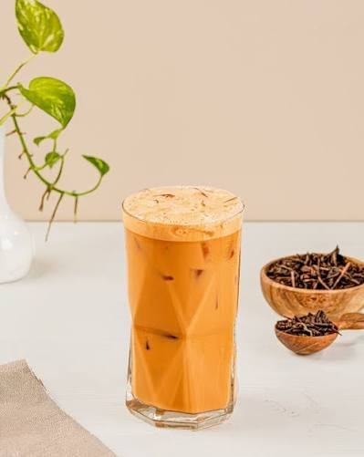
Teh Tarik Nusantara
Teh hitam pilihan diseduh dengan susu kental manis lalu ditarik menghasilkan busa lembut yang khas.
Rp 16.000Dessert / Makanan Penutup
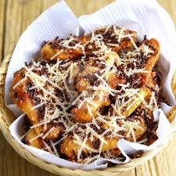
Pisang Goreng Keju Madu
Pisang kepok manis digoreng renyah keemasan, ditaburi keju melimpah dan disiram lelehan madu hutan.
Rp 22.000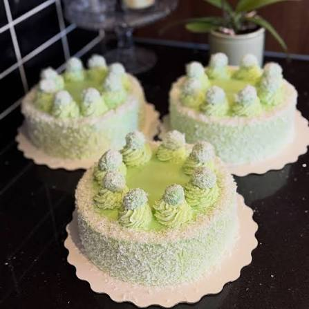
Klepon Cake Klasik Modern
Kue sponge pandan lembut berlapis krim kelapa gurih dengan isian lelehan gula merah di dalamnya.
Rp 28.000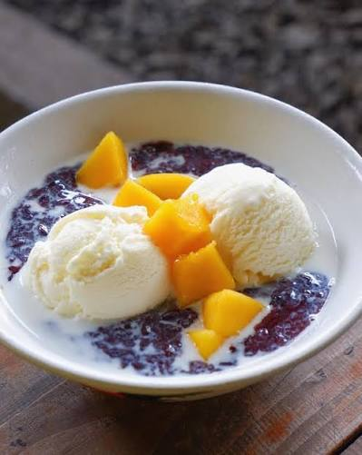
Bubur Ketan Hitam Es Krim
Bubur ketan hitam legit hangat berpadu sempurna dengan gurihnya santan dan satu scoop es krim vanila.
Rp 25.000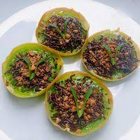
Martabak Manis Mini Pandan
Martabak mini lembut beraroma pandan dengan topping taburan cokelat meses asli dan kacang tanah.
Rp 24.000